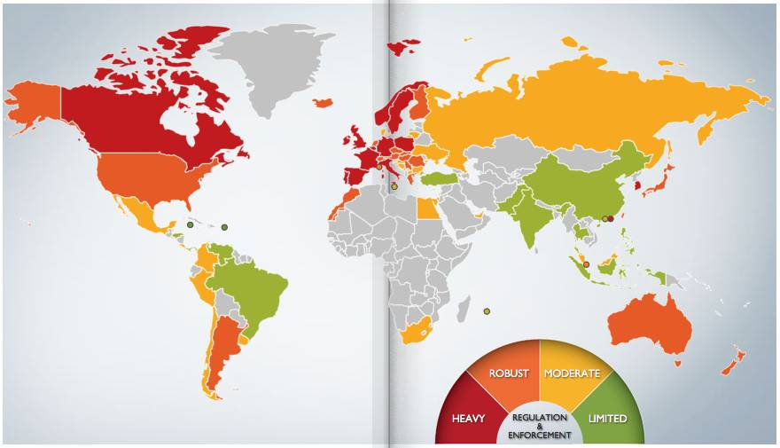

你正在为互联网上的“免费”付出什么？
Contents

上周，网易邮箱密码泄漏的事情让不少人吓了一跳。当时我没凑这个热闹。现在事件热点过去了，可以来聊聊除了“吓一跳”之外的事情了。
记忆中，国内大规模的密码和信息泄漏的事情发生了很多次，比如4年前的CSDN密码泄漏，那一次泄漏的还是明文，再之后还有开房数据泄漏事件。每次发生这种事件，总会有人写文章说，你们这些信息是不值钱的，不用担心，都是黑产行业玩剩下才流入公众视野的。
这个说法对不对？某种意义它是正确的，这些信息确实是被玩剩下的，但是用户应该不担心吗？当然不应该，用户不仅应该担心，而且应该非常担心，非常紧张。事实上，当这些数据在黑产行业（可以称之为专业领域）流传的时候，它反而对普通用户真正的伤害不大。真正能对用户造成严重伤害，是从这些数据进入日常公众领域那一刻开始的。专业人士更在乎可持续发展，不太可能真正拿用户信息做太糟糕的事情，那是自毁财富。如果不引人注意的拿用户信息去刷个注册用户数量，冲个榜之类，慢慢赚钱，可以赚很久，用户压根不知道这些事。但等到了公众领域，就有不知好歹的小朋友直接进入人家银行帐号，把钱搬空了，钱少了用户自然立马就发现了，最后新闻一报道，最后警方一介入，大家都玩不成了。
而另外一方面，这些信息是被玩剩下的这个观点又非常正确。因为实际上信息的泄漏程度远远超过普通人的感知，每个人都有不知道多少自认为“隐私”的数据，早就在地下的圈子里面四处流行了。
在信息时代之前，数据的泄漏和传播比今天难的多。传统的纸质文档很难被复制和传播，对比一下早年的”手抄本”，很容易就能理解，在信息可以被数字化之前，就算要刻意传播一份信息，也需要巨大的成本和时间， 那时候生产信息和传播的权利基本是被垄断的。
到了现在，一份存储在联网设备中的数据，可以瞬间被复制到世界各处。这从根本改变了传播的方式，也使得保密变得无比困难。这种低成本、速度极快的传播特性，造成了”不可撤回”的特性，即一份数据，一旦流传进公共领域，就几乎无法被撤回或销毁，进入公共领域之后的数据，就相当于永远存在在互联网上了。用任何现实世界的东西来比喻信息传播，都不恰当。现实世界的存在物体，无法被复制，我拿走你的东西你就没有了。信息可以被无限复制，被复制者并不会失去原有的信息，甚至很多时候被复制者并不知道自己的信息已经被复制过了。
在这种状况下，应该默认凡是以数字化形式存在的数据，都早晚会进入公共领域泄密。唯一的区别只在于泄密的时间早晚不同。所以，正确的心态是默认凡是被数字化的数据都已经是公开的。这样你就可以提前做好准备，当泄密真的出现的时候，可以不那么慌乱。密码泄漏只是所有信息泄漏中的一小部分，它看起来非常吓人，确实也会造成很多严重后果，但密码只是个人数据的第一关。实际上，人们暴露在各处的和个人高度相关的数据比密码本身多的多。在中国的情况又特别严重。
再看一次标题上用的这张世界地图。这张图上，根据世界各地区的用户数据保护法律严格程度，用4种颜色做了标记。从法律角度看这个问题，会对自己身处的环境有更深刻和清晰的认识。
- 法律要求最高的，是欧洲大部分国家、加拿大、韩国和香港。
- 其次，是美国、澳洲、新西兰、日本之类。
- 再其次，是俄罗斯，墨西哥之类。
- 最低的级别，中国、印度、巴基斯坦、土耳其、巴西…
这些数据保护法律规定了什么呢？各国具体内容不同，但大体是规定了服务方可以获取用户哪些信息，应该尽什么样的信息保管义务，以及一旦信息泄漏，如何惩罚。从地图上很容易看出来，中国用户处在一个隐私保护法律极度落后的地方。但同时，这又是一个公众互联网服务极其发达的国家，同时具备这两个条件的地方，应该没有第二个了。严格的法律会让企业倾向于少收集非必要信息，以免承担过重的责罚，而宽松的法律下，能拿多少就拿多少，不要白不要。
所以这就不难明白为什么很多中国公司会肆无忌惮的要求用户提供更多信息，为什么一个中国出产的app基本会把Android能要的权限都要到手。最低级别的隐私保护法律，和极其发达的互联网服务放在一起，使得企业有机会拿到更多的信息，但又不用承担什么法律责任，在这个环境下不去要更多信息，显然是吃亏的，只有特别有节操的公司才会这么干。想想中国有多少公司会让用户输入身份证号？用户通常觉得输了也无所谓，而在美国，有多少服务商会让人输入SSN号码？在加拿大，敢于让用户输入SIN号码或者驾照号码的公司简直是罕见，少见的必须输入的，也是确实业务依赖于此，比如Uber会需要驾照和SIN号码，是因为要审核司机驾驶资质和纳税，大部分不涉及钱的服务，是不可能让用户提交这些信息的。
种种原因和现实环境，导致中国政府和公司对于用户数据极度渴望是绝无仅有的。在中国现实世界被收集起来的数据往往高于实际需要。看看各种创业公司的商业计划书，里面要不提到“我们的用户数据未来可以做某某用途”之类的大数据相关忽悠，那简直就不能算是一份合格的计划书。但他们收集到的这些数据，能保证安全吗？大公司投入巨大人力物力希望保证这些信息的安全，结果还是往往难以避免，小公司能做到什么地步呢？这些数据都像一个个定时炸弹。它们早晚会爆炸，只是现在还没到时候而已。而且这些和个人相关的行为数据，实际伤害比简单的密码大多了。
因为有较高级别的隐私法律，在美国很多事情是没法做的。有人说中国互联网创业环境好于美国，从这个角度看，我还真要承认这个看法有道理。但这对普通用户这算不算好消息？那就要看每个人自己的判断了。
包含密码数据在内的隐私数据泄漏事件，都算是典型的黑天鹅事件，这个说法来自一本叫做《黑天鹅》的书，大意是这类事件在发生前谁都不觉得会怎么样，但在某个时间点一定会出现并造成重大损失的事件。在今天这个时代，因为信息已经传递的足够快，黑天鹅事件会更加频繁的出现。这类事件，没什么避免的方法，除了清醒的知道自己在做什么之外，唯一能做的就是增强想象力，尽量多想一些可能性。
清醒知道自己在做什么，就是在填写个人信息（包括但不限于密码）的时候你是否考虑过这些信息会被用于哪里，对方是否有能力保护其安全。以前在上海的时候，有一天居委会跑来要登记个人信息，我要求对方出示这样做的法律依据和保密方法，对方拿不出来，我就客气的请对方走人了，对方也没多说什么。大部分企业是根本没有安全审计流程的。所以千万别太相信他们的保密承诺，就算他们真的想保密，是不是有这个能力也得打个问号。
增强想象力，就是要多考虑一些可能性，比如，在大规模密码泄漏事件发生之前，如果你曾经想到过某个网站用户库在将来可能会被明文放在网上供人浏览，那么你就不会在不同网站用一样的密码。这时候也就不用慌乱一团四处修改密码。顺便说一句，现在大家已经知道了，出了密码泄漏事件之后，要去改密码。而在你慌乱一团修改密码时，如果你所在的网络环境不安全…后果更糟糕。有朋友曾经说过，如何能骗到更多密码呢？去做一个“输入你密码来查询是否泄漏”的网站，结果会骗来一堆新密码。
在《黑天鹅》这本书出现之前，没人体系化概括这种现象，但类似的看法倒是一直存在，比如地球同步卫星理论发明人兼科幻小说家AC克拉克有个说法，大意是：如果一个德高望重的科学家说某个事情”不可能”通常他是错的，如果他说”可能”那么通常他是对的。所以应该把”我们不知道”这种态度做为面对事情的常态，尽量多相信一些可能性。比如，当你准备输入任何信息的时候，都先想一下“如果我现在提交的这些信息肯定被其他人拿到，结果会怎么样，我会怎么做？”。当你这么想的时候，会发现世界和以前略微有点区别，比如说，你会开始逐渐明白，一些免费的东西并不是真正免费的，它让你付出的东西其实很多。
我年初写过一篇文章，叫做《开源软件和OpenSSL的真实故事》，里面提到了更多开源软件的现实情况。这些是构成我们目前互联网世界的基础。但实际上，这些基础四处都是漏洞，实际的软件环境，人员对安全的漠不关心，急于发展的各种创业公司们，会让这些情况变得更加严重。而用户，每一次隐私数据泄漏发生之后，人们都会先吓一跳，媒体写一堆文章。但一周之后，大家都忘了这件事了。之后，更多的信息被收集起来，等待着下一次隐私泄漏事件发生。
参考备注：
标题图截图自： http://dlapiperdataprotection.com/#handbook/world-map-section/c1_BR 这是一个比较各国个人数据保护法律严格程度的网站，可以选择两个国家对比，也可以看具体法律详情。十分推荐，尤其是打算做海外市场的，更是要好好研究它。
Author Huo Ju
LastMod 2015-10-26